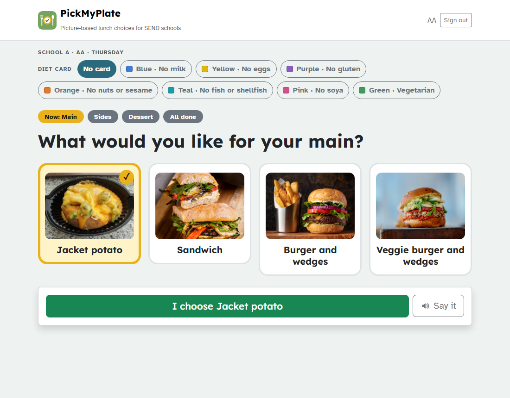
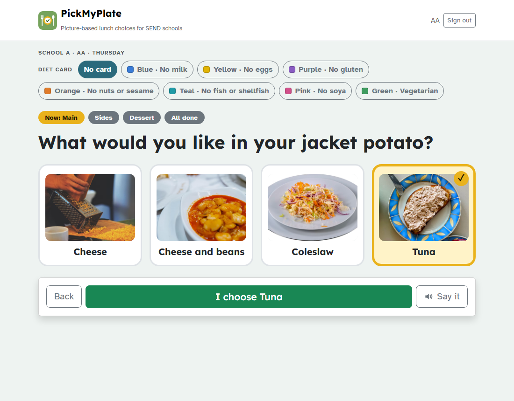
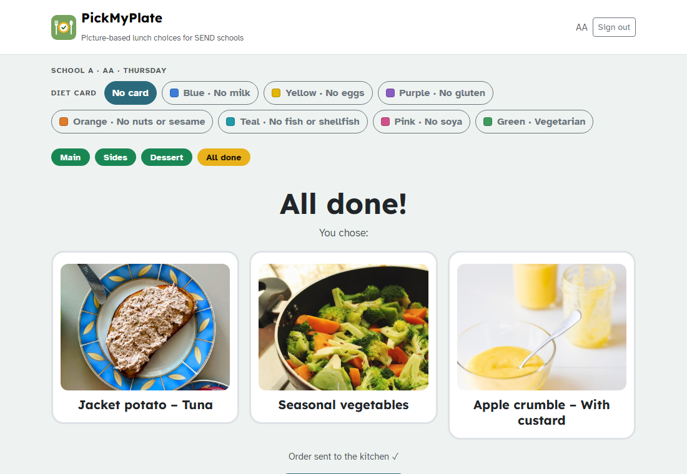
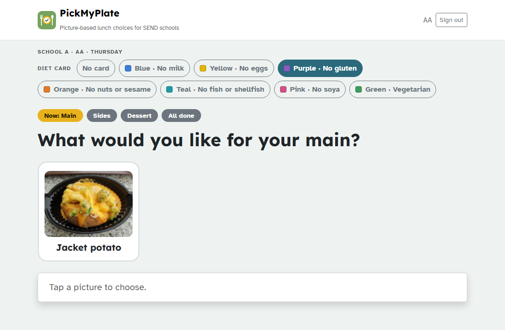
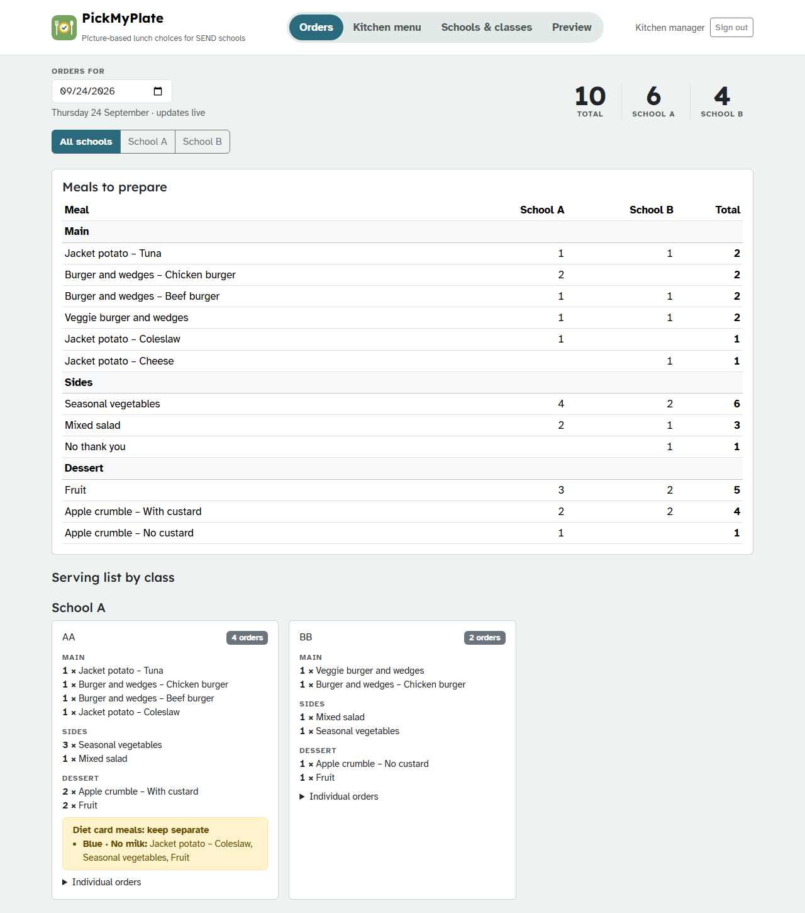
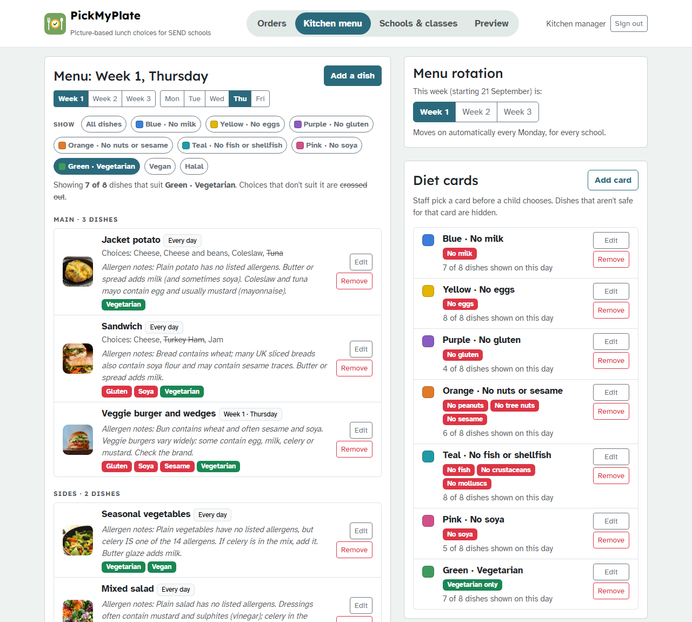
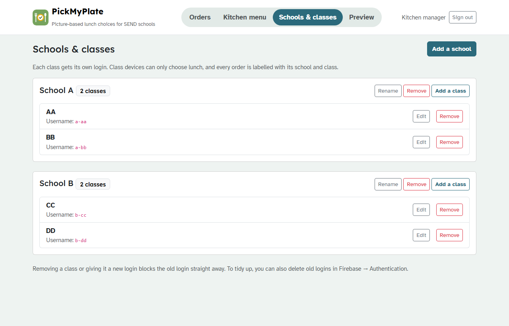

PickMyPlate
Product overview
Every child can choose their own lunch
A picture-based, read-aloud lunch ordering system for SEND schools, with allergy-safe diet cards, class logins and live orders for the kitchen.

A picture-based, read-aloud lunch ordering system for SEND schools, with allergy-safe diet cards, class logins and live orders for the kitchen.

In SEND schools, many children are autistic, non-verbal, or not yet reading, so a written menu doesn't work for them. PickMyPlate shows the day's menu as large real food photos, reads each choice aloud, and takes the child through one simple step at a time. Every order goes straight to the kitchen, labelled with its school and class.
| Feature | What it does |
|---|---|
| Real food photos | Every dish and filling has a clear photo, all shown at the same size. The kitchen manager can replace any photo with one of the school's own food. |
| Read aloud | Tapping a picture says its name, so children who can't read still know exactly what they're choosing. |
| Now and Next steps | Main → Sides → Dessert of the day → All done, one step at a time. |
| Choices inside a dish | Jacket potato and sandwich fillings, burger types, and custard or no custard, all chosen from photos. |
| Diet cards | Seven colour-coded cards (e.g. Blue · No milk, Green · Vegetarian) hide anything unsafe. Cards use colours, never names. |
| The school's real menu | The 3-week rotating menu with the UK's 14 allergens. It moves on to the next week automatically every Monday. |
| Live orders | Totals for each school and combined, meals to prepare, and a serving list for every class. |
| Secure logins | Each class has its own login. Only the kitchen manager can change the menu, schools and classes. |
After the class signs in, children see only this screen: no menus, settings or distractions.

Choices inside a dish. After choosing a jacket potato, the child picks a filling from photos.

All done. The full meal is shown and read aloud, and the order is sent to the kitchen.
Before a child with a dietary need chooses, the adult taps their diet card. PickMyPlate then shows only the dishes and fillings that are safe for that card.

With Purple · No gluten selected, only the jacket potato is shown. The sandwich and burgers contain gluten, so they are hidden.
| Card | Hides anything containing |
|---|---|
| Blue · No milk | Milk |
| Yellow · No eggs | Eggs |
| Purple · No gluten | Gluten (wheat, barley, oats, rye) |
| Orange · No nuts or sesame | Peanuts, tree nuts, sesame |
| Teal · No fish or shellfish | Fish, crustaceans, molluscs |
| Pink · No soya | Soya |
| Green · Vegetarian | Anything that isn't vegetarian |
More cards can be added, e.g. a combined card for a child with several allergies. Safety rule: a dish whose allergens haven't been confirmed by the kitchen manager is always hidden from every diet card.
Orders arrive live for each school and in total, with exactly what to prepare and a serving list for every class.

Example data. Meals ordered with a diet card are listed separately, in yellow, so they're kept apart. Mistaken orders can be removed. Any past date can be viewed.
The whole menu is managed here: dishes, photos, fillings, allergens, dietary tags, diet cards and the menu rotation.

"Show" filter buttons display the dishes that suit each diet card. Fillings that don't suit it are crossed out.

Add schools and classes, and create or replace class logins.
| Area | How it works |
|---|---|
| Class logins | Each class has its own username and password. Forgotten passwords are replaced instantly, and the old login stops working. |
| What classes can do | Choose lunch and send orders for their own class only. They can't see other orders or change anything. |
| Kitchen manager | One manager login controls the menu, schools, classes and orders. |
| No children's names | Orders store only the school, class, meal and diet card colour. |
| Data in the UK | Stored in Google Firebase's London data centre, protected by security rules. |
| Part | Technology |
|---|---|
| Pages and design | HTML5, Bootstrap 5.3 and custom CSS. Works on tablets, phones and computers, with dark mode. |
| Behaviour | Plain JavaScript |
| Logins and database | Google Firebase (Authentication and Firestore), London region, with security rules |
| Read aloud | The browser's built-in speech (British English) |
| Hosting | GitHub Pages |
| Photos | Unsplash (free licence), replaceable with the school's own photos |
| Stage | Plan |
|---|---|
| Now | Live for School A and School B. Pilot with one class in each school, and gather feedback. |
| Next | Install on class tablets like an app. Printable picture menus for classrooms. |
| Then | Texture levels for children with swallowing difficulties. Menus in other languages. |
| Later | Allergen suggestions to help staff (always confirmed by a person). Versions for children's homes. |
https://usmanbabardev.github.io/pickmyplate/
Access is login-only. Ask the kitchen manager for a demo class login.
© 2026 Usman Babar. PickMyPlate, built by Usman for Bayleafcare. Free to use. Food photos from Unsplash, used under the Unsplash License. All screens show example data.